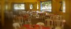
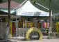
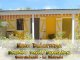
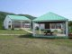

Vous aimez l'île de La Désirade?
Partager vos photos, vos infos, vous coups de coeur...
Actualités
A la Une

A Désirade, les journées du patrimoine, c’est Indigo !
Venez découvrir l’indigo : Participez à une visite commentée sur l’histoire de l’indigo, sa culture et son utilisation aux Antilles depuis les Amérindiens. Vous pourrez assister à une démonstration de (...)
Fèt A Kabrit 2013
#FAK - 12ème édition
30 & 31 mars sur l’île de La Désirade
Rendez-vous les 30 et 31 mars sur l’île à La Désirade pour la fête à Kabrit 2013. "Bienvenue ! Nou kontan vwe zot !" L’Office du tourisme et la municipalité de La Désirade vous invite à la 12eme édition de la Fèt A Kabrit : Communiqué de l’Office du (...)
Contrôle technique : 6 mois pour se mettre en conformité
Jusqu’au 30 juin 2013 pour se mettre en conformité
Tous les lundis et mardis, de 10 heures à 18 heures
A partir de lundi prochain, les automobilistes désiradiens devront se rendre dans le nouveau centre de contrôle technique des véhicules - qui fonctionnera tous les lundis et mardis, de 10 heures à 18 heures - pour se mettre en conformité avec la (...)
La maison de l’Indigo en Désirade
Anne et Ghis vous invitent à partager leur passion des couleurs végétales en Désirade, chemin de La Montagne à Baie-Mahault (section Est de la Désirade). Anne et Ghis décident de remettre en valeur des plantes colorantes aux Antilles : la maison de l’Indigo est née. Une case bleue, bien accrochée à La (...)
> Découvrir
Découverte de l'île | Les plages | Les ballades | A visiter
-
Beauséjour | Plage à FiFi

La Payotte
Téléphone : 0590 20 01 29
à Beauséjour

Hôtel Oasis & restaurant Lagranlag
Téléphone : 0590 200 100
-
Studio meublé tout confort

Studio à Baie-Mahault (Désirade)
Tel : 0690 74 41 46 | 0590 20 07 03
Baie-Mahault | Plage Petite Rivière

Gîtes Bord de mer
Téléphone : +590 690 484 702